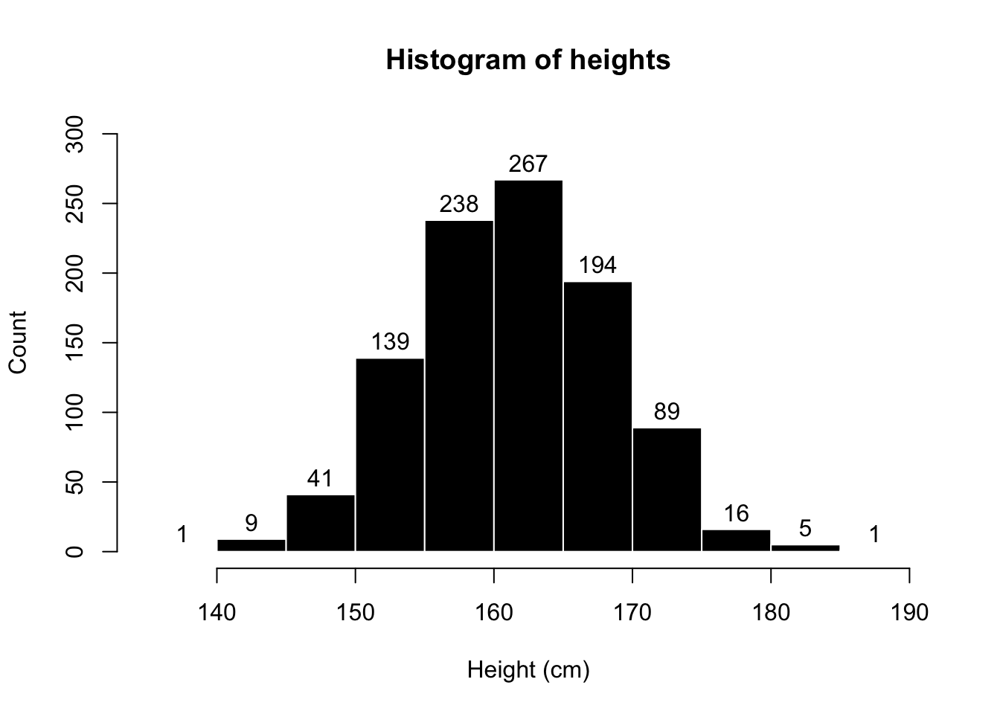
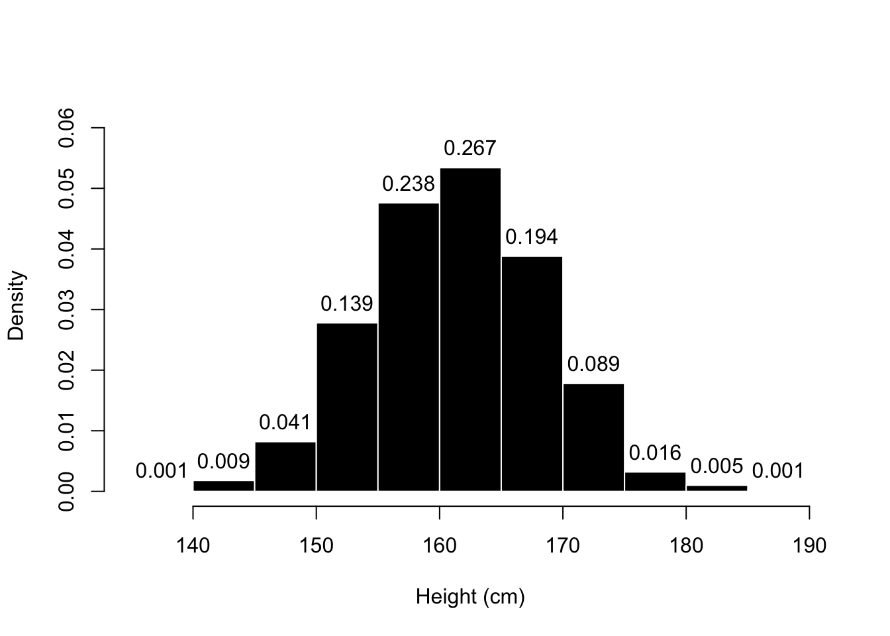
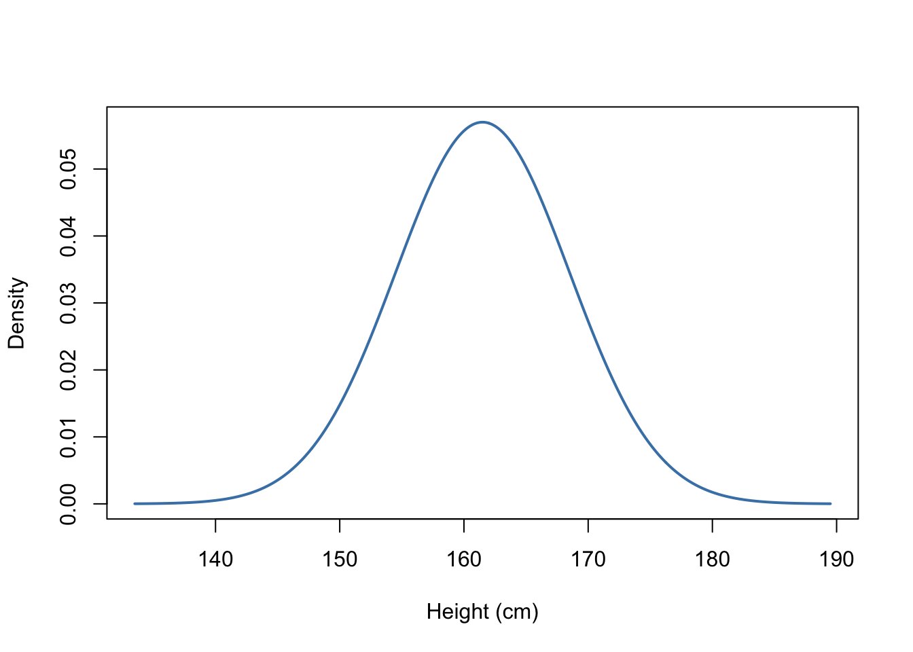
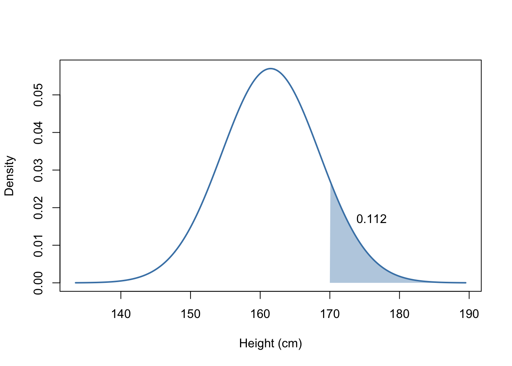
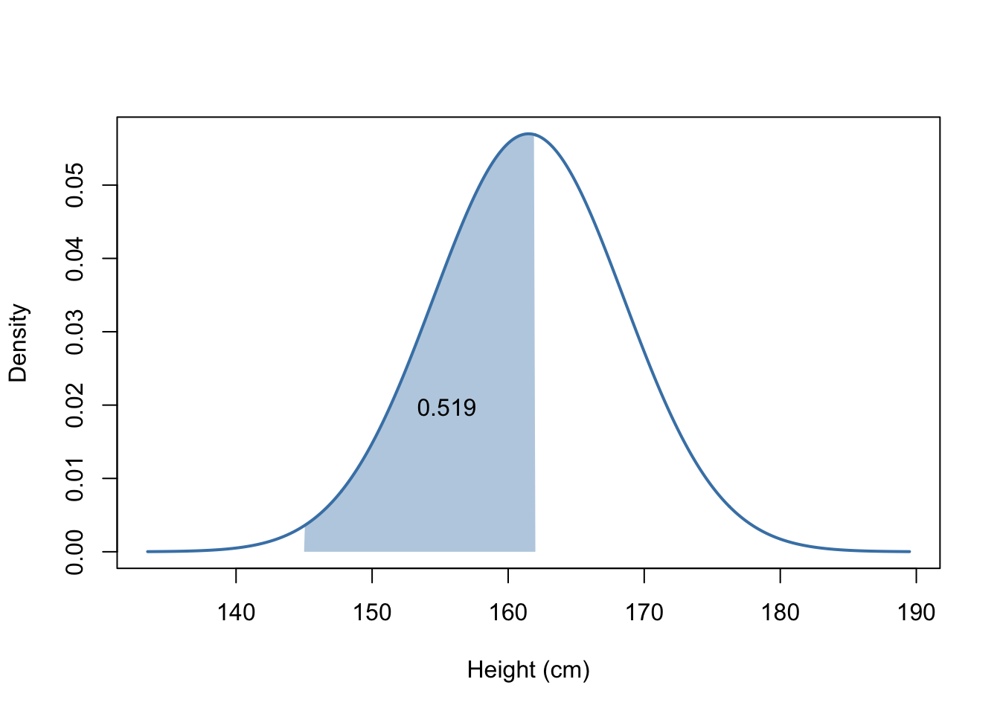

6 Random Variables and Probability Distributions
6.1 Random Variables
A random variable is an assignment of a numerical value to each possible outcome. We can then compute the probability of a random variable being equal to some value, or falling in a range of some values.
Example 6.1 Consider the random experiment when a flip a coin three times. Let \(X\) be the random variable that counts the number of heads that appear. There are four possible values \(X\) could be: 0, 1, 2, or 3.
The above is an example of a discrete random variable. If I can list out all the possible values of the random variable, then it is discrete.
A random variable is a continuous random variable if the possible values include any number in some interval.
Example 6.2 I randomly pick up a pile of sand at the beach. How much that piles weighs is a continuous random variable, since it can take a range of numbers.
In general, discrete random variables are things we count, while continuous random variables are things we measure. some examples of discrete random variable are:
- The number of coin flips until I flip a heads.
- The number of shots in a soccer game.
- The number of cars caught speeding at an intersection.
- The number of students who receive an A on an exam.
The following are continuous random variables:
- The weights of wrestlers.
- The height of skyscrapers.
- The temperature at the top of Mount Washington.
Note that sometimes the above can appear discrete, because we often round values. However, they are in fact continuous. The following variables are technically discrete, but they are frequently approximated as continuous:
- SAT, or other exam, scores.
- Annual salary of employees.
We will discuss later when approximation is useful and appropriate.
6.2 Discrete Probability Distributions
If we have a discrete random variable, we can describe the probability of each possible outcome with a probability mass function, also known as a probability distribution.
Example 6.3 Consider the random experiment when a flip a coin three times. Let \(X\) be the random variable that counts the number of heads that appear. We can write down the sample space to determine the probability of each possible value for \(X\), since each outcome in the sample space is equally likely. Sample space:
\[HHH, TTT, HTH, THT, HTT, THH, HHT, TTH.\]
Now we can count the probability for each possible value of \(X\).
| \(x\) | \(P(X = x)\) |
|---|---|
| 0 | \(1/8\) |
| 1 | \(3/8\) |
| 2 | \(3/8\) |
| 3 | \(1/8\) |
We read this as, \(P(X = 0) = 1/8\), \(P(X=1)=3/8\), etc.
We use capital letters, like \(X\), to represent random variables and we use lowercase letters, like \(x\), to represent placeholders for potential values.
Example 6.4 A random variable \(Y\) has the following probability distribution,
| \(y\) | \(P(Y=y)\) |
|---|---|
| 1 | \(0.1\) |
| 2 | \(0.3\) |
| 3 | \(0.3\) |
| 4 | \(0.2\) |
| 5 | \(0.1\) |
What is the probability that \(X=2\)? What is the probability that \(X \geq 3\)?
TipAnswer
From reading the table we see that,
\[P(X=2) = 0.3.\]
Note the the probability that \(X \geq 3\) is the same as the probability that \(X\) is 3, 4, or 5. So,
\[P(X \geq 3) = P(X=3)+P(X=4)+P(X=5) = 0.3+0.2+0.1=0.6.\]
A probability distribution should satisfy the following conditions:
- For any \(x\), \(0 \leq P(X=x) \leq 1\).
- When we sum over all possible values, the probability must equal 1.
Example 6.5 Does the following table represent a valid probability distribution?
| \(x\) | \(P(X=x)\) |
|---|---|
| 1 | \(0.1\) |
| 2 | \(0.3\) |
| 3 | \(0.7\) |
TipAnswer
No. When we add up all the probabilities, the sum is 1.1 not 1.
Example 6.6 Does the following table represent a valid probability distribution?
| \(x\) | \(P(X=x)\) |
|---|---|
| -2 | \(0.25\) |
| -1 | \(0.2\) |
| 0 | \(0.05\) |
| 1 | \(0.3\) |
| 2 | \(0.2\) |
TipAnswer
Yes!
Example 6.7 Does the following table represent a valid probability distribution?
| \(x\) | \(P(X=x)\) |
|---|---|
| 1 | \(0.3\) |
| 2 | \(0.3\) |
| 3 | \(0.3\) |
| 4 | \(0.3\) |
| 5 | \(-0.2\) |
TipAnswer
No, we cannot have negative probabilities.
6.3 Continuous Probability Distributions
To understand continuous distributions, it will help to start with a histogram. The following is a histogram of 1,000 adult female heights,
Example 6.8 What is the probability of selecting a random person with a height of at least 170 cm?
TipAnswer
\((89+16+5+1)/1000 = 111/1000 = 0.111\)
We divide by 1000 to get the correct probability. Instead of doing this, what if we rescaled the graph so the probability for each bar was equal to its area. Since each bar has width 5, we need to divide the heights by 200. This is known as a density histogram. Above the bars below I am showing the area of each bar not the height.

When a random variable is continuous we extend this idea to a continuous function known as a probability density function. The following density curve represents the heights,

Again, if I wanted to know the probability that a randomly selected female has a height of at least 170 cm I would compute the area under the density curve.

Similarly, if I wanted to compute the probability that someone has a height between 145 cm and 162 cm I would compute the following area.

We actually saw this idea with our image of the Empirical Rule, although we didn’t explicitly say it. The areas under the curve were (approximately) the proportions we stated!
For a discrete random variable, whether or not the inequality is strict makes a difference.
Example 6.9 Roll two dice and let \(X\) denote the sum of the rolls. What is \(P(X > 10)\)? What is \(P(X \geq 10)\)?
TipAnswer
The sample space is 36 outcomes that are all equally likely. There is 1 outcome that sums to 12 (66), 2 outcomes that sum to 11 (56, 65), and 3 outcomes that sum to 10 (46, 55, 64). So,
\[P(X > 10) = \frac{3}{36} = \frac{1}{12}\]
and
\[P(X \geq 10) = \frac{6}{36} = \frac{1}{6}.\]
ImportantInequalities and Cont. RVs
For continuous random variables whether or not the inequality is strict does not change the probability! If \(X\) is a continuous random variable, then
\[P(X > 5) = P(X \geq 5).\]